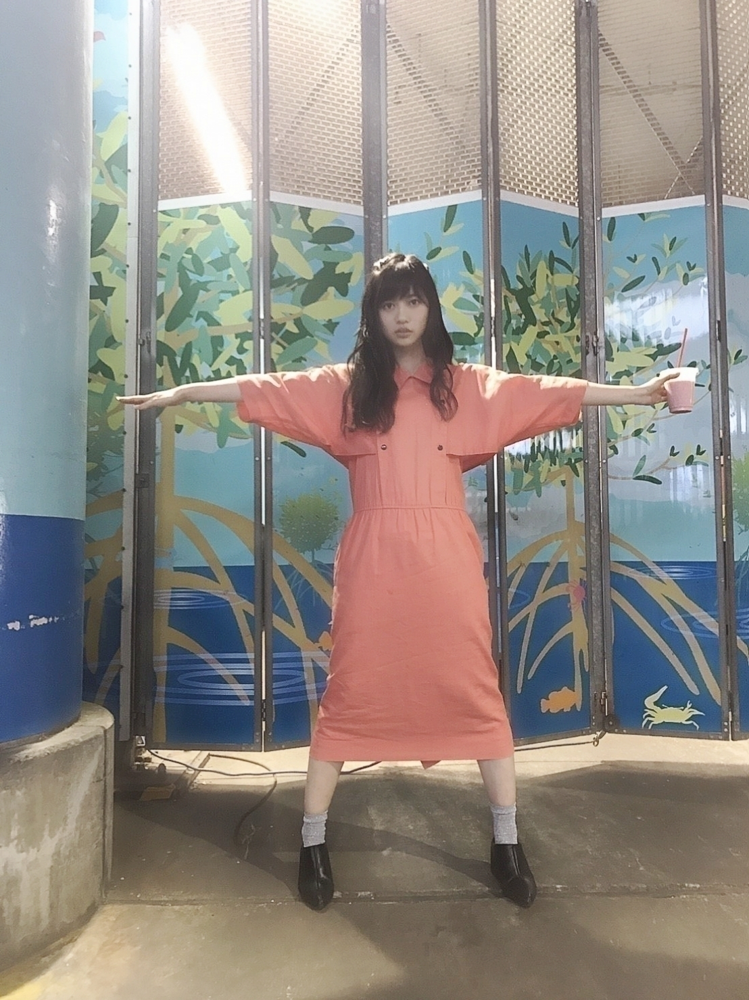
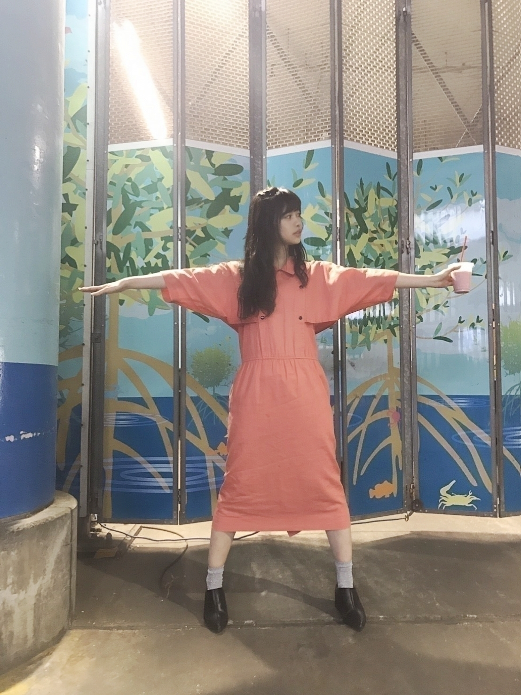
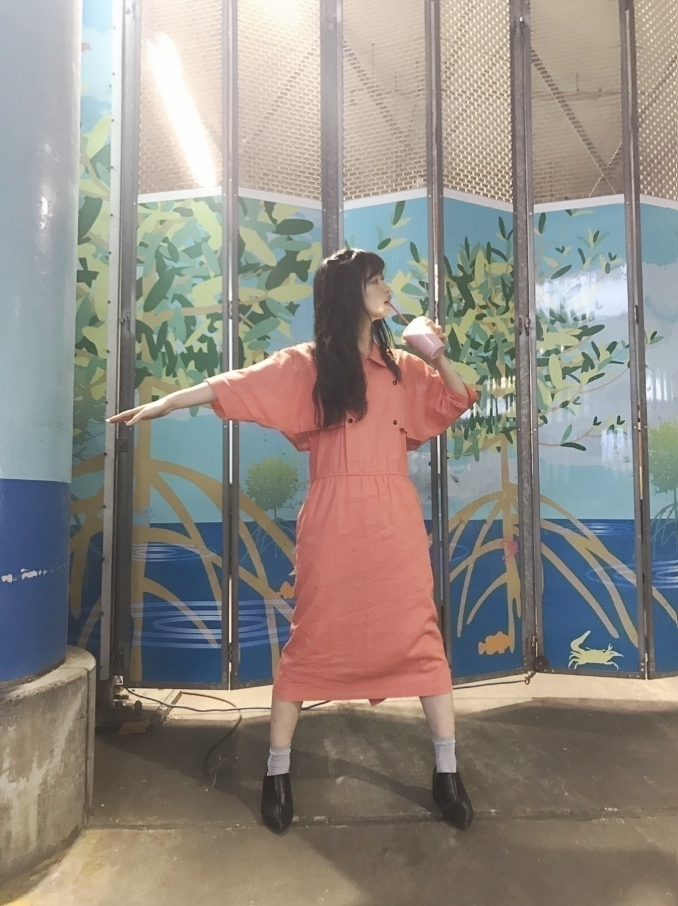
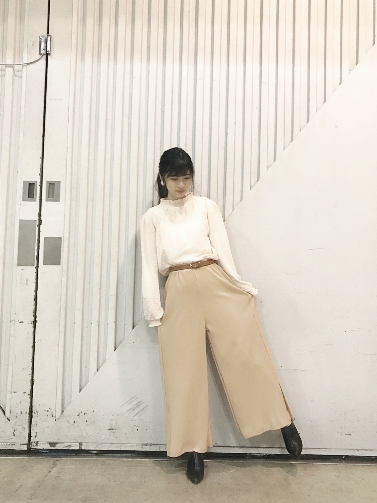

2017/0503Wedオレンジキャップ
好きな食べ物はトマト
珍しいトマトが差し入れに置いてあって
こっそり沢山食べちゃいました(^^)✨
とても美味でした
握手会でも
トマト苦手なんだけどどうやったら食べれますかねって質問をされます
トマトの食感が嫌いって方多いよなーと感じる今日この頃、、、
おはようございます
こんにちは
こんばんは
寺田蘭世です
前回の個別握手会in横浜◎
（29日横浜の私服はまた今度載せます、、、）
ありがとうございました✨
この日は
皆さんの顔見るとホッとする1日でした
1.2.3部



オレンジ色？のワンピースです
袖の形が珍しくて買いました✨
このボタン外すことも可能で
ノースリーブになったり
違った形にもなるワンピースです
1枚で色んな形になるのは
雰囲気も変わって見えるし
有りがたいですね(..)
4.5部

シンプルにしました
古着ですかーって凄く聞かれるのですが
このお洋服は違います
tops：Emsexcite さん
bottoms：Emsexcite さん
belt：UNIQLO さん
4部5部でイヤリングをつけたりつけなかったり
小物や髪型毎回変わってたりするので
良かったら宜しくお願い致します、、、(..)
やっぱり個別握手会は
全国握手会よりも時間が長いから
こちらも落ち着いて
喋れるから良きですー✨
アルバムの個別握手会も
受付始まりました
アルバムの個別握手会は
更に時間がゆっくりなので
待ってます(..)✨
多分、歌衣装での握手だよね
あれ、楽しいし
私自身やっててレア感あるんですよね
今回は
『ブランコ』のお衣装あるのかな
あれ、武道館でしか
皆さんの前で着てないからな、、、
既に皆さん来てくれるのかなってドキドキと沢山喋れるんやー有り難きの方のワクワクな気持ちがあります
●質問！！
お気に入りの髪型は？かわいいと思う女の子の髪型&ファッションは？
→うーん
ストレートよりは
緩めの巻き髪や無造作な感じのヘアスタイルが好きです。
ファッションは
その人の個性が見えるもの
その人のバランス良い所が目立つ様なお洋服です。
難しいよね。
●写真集出さないの？
→(°0°)‼
自分の事好きにはなれないけどこのお仕事をやらせて頂いてから私は舞台とか映像周りより撮影が1番楽しいなって事に気付けて
自分で一瞬一瞬にテーマを作るのが好きだから写真集とかでなくてもそういった事はやりたいなって思います。
フォトブック出してって握手会で言われた時
わお、これだって思いました。
乃木坂工事中番組内でも
テラダって謎だなって言われる事が増えたから解明というかちゃんと私が生きてきた今までの道のりを知って欲しいから本とか出したらちゃんと説明つくのかなって
とにかく写真集出してーとか言って頂ける事が
何より嬉しいです✨
どちらにせよ需要があるなら(..)✨
何事も全力でやらせて頂きます(..)✨
●蘭世の勢い？
→とまらんぜーーーーー
●蘭世ブログ更新ありがとう！！
蘭世の服装本当に好き、、
真似したくなるし、憧れる、
1番参考にしてる！！服買うときも蘭世の服装考えながら買ったりしてる
→ありがたいです✨
本当に嬉しい話です
皆さんが褒めてくれるから
もっと自分も楽しみつつ頑張ろーって思えます
これからも良い意味で人に影響を与えられる人になります
インフルエンサーーですから
コメントありがとうございます(..)
3期生と仲良くなれたっていう質問も多いので
ちと、3期生について
私ね1期生の方にやられて嬉しかった事だけ後輩にはやりたいなーって思ってて
意外に人見知りだけど
頑張って皆と連絡先は交換したんだ✨
まだ3期生と乃木坂４６全体としてお仕事が一緒になる事が少ないけど
BirthdayLIVE等を通して
3期生の子も私達が研究生制度だった時みたいにブログも更新日決まってるし
勿論、最近乃木坂工事中でも3期生紹介してたり
雑誌等でもいろいろ紹介されてると思いますが
まだ、世に出てない関係性とかね(..)✨
葉月ちゃん
凄く元気だよね
この前ねLIVEの合間にね
体重何キロですかーって聞かれたの
そっと葉月ちゃんだけには答えましたけど、、、
私の身長もしってて
LIVE来てくれてたりと
本当に昔から乃木坂46が好きだったんだなって
それで私なんかのプロフィールも知っててくれた事が
嬉しかったなー(..)✨
あと、私で良ければお洋服選んであげる、、、(..)
久保ちゃんとは凄くお話してみたいって思って
珠美ちゃんは割と連絡とった方
今度お話してみたいって思ってます(..)
みなみちゃんは
呼び方に悩んでて、、、
乃木坂工事中でもやってましたよね
梅ちゃん
みなみちゃん
なんだろうか、、、
3期生の中では同い年らしい
しっかりしてて優しそうなイメージです✨
ももこの事はそっと見守りたい
最近凄くフレンドリーに
話しかけてくれる！
都内連れ回したいな！
夢の国とか行ってくれるかな
私もトマト一番好きな食べ物だからトマトカフェとか行きたいな
あ、与田ちゃん
ブログ読みましたー
良かったらお下がり
来て欲しいですー
って感じです(ง ˙₃˙ )ง
書ききれない、、、、けど(ง ˙₃˙ )ง
アンダーライブ◎
最終日の
お昼に見に行けました✨
やっぱり
アンダーライブっていいなって言うのが第一です
そして、乃木坂46全体
まだまだこれから楽しめる
寧ろ、全然もっと色んな可能性新しい物を持ってるグループだなって思いました。
それと、あんなに素晴らしいステージ
便りになる尚且つキラキラしてるメンバー、スタッフさん
その私達の気持ちを感じ取ってくれるファンの方
あんなに凄い物体に
自分も作る立場の人間として参加してる事
そこに吃驚しました。
アンダーライブって
みんなの思い団結力が強いから
そう言った絶妙なバランスで出来てるんだなって
だから毎回毎回熱いんだなって思いました。
そして今回12人だからこそ
個々にスポットが当たってて個性が良く見えたのが
すごく良かったです
本当に乃木坂46は知れば知るほど良いです✨
宝塚トーク◎
4/27、、、
月組 佳城葵さん
月組蘭世惠翔さん
103期生 爽悠季さん
お誕生日でした
おめでとうございます
皆様にとって良い一年となりますように、、、✨
早く宝塚見にいきたいです
うぅ
GirlsAward 2017 S/S
わーい(ง ˙₃˙ )ง
ファッションだいすき(ง ˙₃˙ )ง
LARMEさんの
オフショットでお別れ
また載せます✨